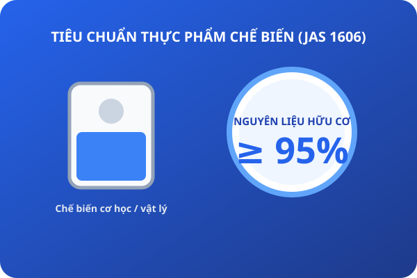

<!doctype html>
<html lang="vi">
<head>
<meta charset="utf-8">
<meta name="viewport" content="width=device-width, initial-scale=1">
<meta name="referrer" content="no-referrer">
<title>JAS 4 · Chế biến Thực phẩm Hữu cơ (JAS 1606)</title>
<link rel="icon" type="image/png" sizes="32x32" href="../icons/favicon-32.png">
<link rel="icon" type="image/png" sizes="48x48" href="../icons/favicon-48.png">
<link rel="apple-touch-icon" href="../icons/apple-touch-icon.png">
<link rel="manifest" href="../manifest.webmanifest">
<meta name="theme-color" content="#2563eb">
<link rel="preconnect" href="https://fonts.googleapis.com">
<link rel="preconnect" href="https://fonts.gstatic.com" crossorigin>
<link href="https://fonts.googleapis.com/css2?family=Be+Vietnam+Pro:ital,wght@0,400;0,600;0,700;0,800;1,400&display=swap" rel="stylesheet">
<link rel="stylesheet" href="deck.css">
</head>
<body class="m4" data-module="JAS · Module 4 — Chế biến Thực phẩm Hữu cơ (JAS 1606)">
<div class="deck">

  <!-- Slide 1: Bìa -->
  <section class="slide title">
    <div class="hero-art"></div>
    <div class="eyebrow">Japanese Agricultural Standards · Module 4</div>
    <h1>Chế biến Thực phẩm Hữu cơ (JAS 1606)</h1>
    <div class="sub">Tỷ lệ thành phần hữu cơ 95%, phụ gia cho phép, công nghệ chế biến và kiểm soát ô nhiễm chéo.</div>
    <div class="meta"><span class="chip">JAS 1606</span><span class="chip">Quy tắc ≥ 95%</span><span class="chip">Phụ gia Bảng 1</span><span class="chip">Không chiếu xạ</span></div>
    <div class="say">Chào mừng bạn đến với Module 4. Chúng ta sẽ khám phá Tiêu chuẩn JAS 1606 dành cho thực phẩm chế biến hữu cơ. Đây là tiêu chuẩn quyết định chất lượng cho các sản phẩm như trà đóng gói, cà phê rang xay, nước ép, bột dinh dưỡng và thực phẩm đóng hộp xuất khẩu sang Nhật.</div>
  </section>

  <!-- Slide 2: Khái niệm thực phẩm chế biến hữu cơ -->
  <section class="slide has-art">
    
    <h2>1. Thực Phẩm Chế Biến Hữu Cơ Là Gì?</h2>
    <div class="body">
      <div class="cards" style="--n:2">
        <div class="card">
          <h3>Định nghĩa theo JAS 1606</h3>
          <p>Là thực phẩm hoặc đồ uống được sản xuất qua các công đoạn chế biến vật lý hoặc sinh học từ <b>nguyên liệu nông nghiệp hữu cơ</b>, nhằm bảo toàn tối đa hương vị và giá trị tự nhiên.</p>
        </div>
        <div class="card">
          <h3>Nguyên tắc chế tạo tối giản</h3>
          <p>Hạn chế tối đa việc sử dụng phụ gia thực phẩm hoá học; không áp dụng các công nghệ làm biến tính sâu hoặc gây rủi ro gen.</p>
        </div>
      </div>
      <div class="statement">Mục tiêu của chế biến hữu cơ là phục vụ người tiêu dùng bằng sự chân thật và thuần khiết của nông sản — không phải bằng hương liệu và chất bảo quản nhân tạo.</div>
    </div>
    <div class="say">Thực phẩm chế biến hữu cơ theo JAS 1606 là sản phẩm được tạo ra từ nguyên liệu nông sản hữu cơ thông qua các phương pháp chế biến nhẹ nhàng, bảo toàn cấu trúc dinh dưỡng tự nhiên và hạn chế tối đa các can thiệp hoá chất tổng hợp.</div>
  </section>

  <!-- Slide 3: Quy tắc tỷ lệ 95% -->
  <section class="slide">
    <h2>2. Quy Tắc Vàng: Tỷ Lệ Hữu Cơ ≥ 95%</h2>
    <div class="body side">
      <div class="side-text">
        <div class="statement">Tối thiểu 95% thành phần nông nghiệp phải là hữu cơ<small>Để được mang danh hiệu "Thực phẩm Chế biến Hữu cơ" và gắn tem JAS.</small></div>
        <ul>
          <li><b>Loại trừ nước và muối:</b> Trong phép tính tỷ lệ %, khối lượng <b>nước bổ sung (added water)</b> và <b>muối ăn (salt)</b> được loại ra khỏi cả tử số và mẫu số.</li>
          <li><b>Thành phần phi hữu cơ (Tối đa 5%):</b> Chỉ được sử dụng khi thành phần đó không thể tìm mua được ở dạng hữu cơ thương mại và phải nằm trong danh mục chấp thuận.</li>
          <li><b>Nếu tỷ lệ &lt; 95%:</b> Không được dán logo JAS Hữu cơ lên bao bì chính của sản phẩm.</li>
        </ul>
      </div>
      <div class="side-art"></div>
    </div>
    <div class="say">Quy tắc vàng của JAS 1606 là tỷ lệ nguyên liệu hữu cơ phải đạt từ 95% trở lên. Đặc biệt lưu ý: nước và muối ăn được loại trừ hoàn toàn khi tính tỷ lệ phần trăm này.</div>
  </section>

  <!-- Slide 4: Công thức tính tỷ lệ thành phần hữu cơ -->
  <section class="slide has-art">
    
    <h2>3. Công Thức Tính Tỷ Lệ Thành Phần Hữu Cơ</h2>
    <div class="body">
      <div class="formula">
        <span>Tỷ lệ hữu cơ (%)</span> <em>=</em> <span>Tổng khối lượng nguyên liệu hữu cơ</span> <em>÷</em> <span>(Tổng khối lượng nguyên liệu − Nước − Muối)</span> <em>×</em> <span>100</span>
      </div>
      <div class="cols">
        <div>
          <h3>Ví dụ: Trà thảo mộc đóng túi</h3>
          <ul>
            <li>Hoa cúc hữu cơ: 60 g</li>
            <li>Búp trà hữu cơ: 35 g</li>
            <li>Cam thảo thường (non-organic): 5 g</li>
            <li>Nước & muối: 0 g</li>
          </ul>
        </div>
        <div>
          <div class="callout">
            <h3>Kết quả tính toán:</h3>
            <p>Tỷ lệ hữu cơ = (60 + 35) / (60 + 35 + 5) = 95 / 100 = <b>95%</b></p>
            <p>$
ightarrow$ <b>ĐẠT CHUẨN</b> dán nhãn JAS Thực phẩm chế biến hữu cơ.</p>
          </div>
        </div>
      </div>
    </div>
    <div class="say">Đây là công thức tính toán mà mọi nhân viên QA và người quản lý phân hạng phải nắm vững. Tổng khối lượng thành phần hữu cơ chia cho tổng khối lượng nguyên liệu sau khi đã trừ nước và muối, nhân với 100. Nếu kết quả từ 95% trở lên là đạt chuẩn.</div>
  </section>

  <!-- Slide 5: Các phương pháp chế biến được phép -->
  <section class="slide">
    <h2>4. Các Phương Pháp Chế Biến Được Phép</h2>
    <div class="body">
      <div class="cards" style="--n:3">
        <div class="card">
          <h3>Tác động cơ học & Vật lý</h3>
          <p>Nghiền, xay xát, ép dầu lạnh, sấy nhiệt, ly tâm, lọc màng, gia nhiệt thanh trùng (Pasteurization), đông lạnh sâu.</p>
        </div>
        <div class="card">
          <h3>Phương pháp sinh học</h3>
          <p>Lên men tự nhiên bằng nấm men, vi khuẩn lactic, ủ tương miso, làm giấm, ủ rượu từ chủng vi sinh vật Non-GMO.</p>
        </div>
        <div class="card">
          <h3>Trích ly dung môi tự nhiên</h3>
          <p>Chỉ được dùng nước sạch, cồn etylic sinh học hoặc carbon dioxide siêu tới hạn ($CO_2$); cấm hexane và dung môi hoá dầu.</p>
        </div>
      </div>
    </div>
    <div class="say">Về mặt kỹ thuật, chỉ các phương pháp chế biến vật lý như ép lạnh, sấy nhiệt, phương pháp lên men sinh học tự nhiên và trích ly bằng nước hoặc cồn mới được phép. Tuyệt đối cấm sử dụng dung môi hoá dầu như hexane để chiết dầu ăn.</div>
  </section>

  <!-- Slide 6: Hai đại kỵ trong chế biến hữu cơ -->
  <section class="slide has-art">
    
    <h2>5. Hai Đại Kỵ: Chiếu Xạ & Biến Đổi Gen</h2>
    <div class="body">
      <div class="cards" style="--n:2">
        <div class="card bad">
          <div class="big">CẤM</div>
          <h3>Chiếu xạ bức xạ ion hoá (Ionizing Radiation)</h3>
          <p>Cấm tuyệt đối việc sử dụng tia X, tia Gamma hay chùm điện tử để diệt khuẩn, ức chế nảy mầm hoặc bảo quản thực phẩm hữu cơ.</p>
        </div>
        <div class="card bad">
          <div class="big">CẤM</div>
          <h3>Công nghệ biến đổi gen (GMO / Geo-engineering)</h3>
          <p>Không chứa bất kỳ thành phần, vi sinh vật lên men hoặc enzyme nào được sản xuất từ công nghệ biến đổi gen.</p>
        </div>
      </div>
      <div class="callout bad">Bất kỳ lô sản phẩm nào bị phát hiện đã qua chiếu xạ hoặc dương tính với GMO sẽ bị <b>thu hồi tức khắc</b> và xử phạt nghiêm khắc theo luật pháp Nhật Bản.</div>
    </div>
    <div class="say">Trong chế biến thực phẩm hữu cơ, chiếu xạ ion hoá và công nghệ biến đổi gen GMO là hai đại kỵ bị nghiêm cấm triệt để. Dù để diệt khuẩn hay chống mốc, chỉ cần sản phẩm có dấu vết chiếu xạ là sẽ bị loại bỏ ngay lập tức.</div>
  </section>

  <!-- Slide 7: Phụ gia thực phẩm cho phép (Bảng 1) -->
  <section class="slide">
    <h2>6. Bảng 1: Phụ Gia Thực Phẩm Được Phép</h2>
    <div class="body">
      <div class="cols">
        <div>
          <h3>Chất điều chỉnh độ chua & Bảo quản nhẹ</h3>
          <ul>
            <li><b>Axit Citric (INS 330):</b> Chiết xuất từ trái cây hoặc lên men tự nhiên.</li>
            <li><b>Axit Lactic (INS 270):</b> Lên men từ đường tự nhiên.</li>
            <li><b>Khí Nitơ ($N_2$) & Carbon Dioxide ($CO_2$):</b> Đóng gói bảo quản môi trường khí biến đổi (MAP).</li>
          </ul>
        </div>
        <div>
          <h3>Chất tạo đông, nhũ hoá tự nhiên</h3>
          <ul>
            <li><b>Lecithin (INS 322):</b> Nguồn gốc từ đậu nành hoặc trứng hữu cơ (chứng chỉ Non-GMO).</li>
            <li><b>Pectin (INS 440) & Agar (INS 406):</b> Chiết xuất từ vỏ cam quýt và rong biển tự nhiên.</li>
            <li><b>Natri Cacbonat & Canxi Clorua:</b> Nguồn khoáng tự nhiên, dùng trong làm đậu phụ hoặc điều vị.</li>
          </ul>
        </div>
      </div>
      <div class="callout small">Bảng 1 là danh mục dương tính: Chỉ dùng phụ gia khi thật sự cần thiết về mặt công nghệ và không thể thay thế bằng phương pháp vật lý.</div>
    </div>
    <div class="say">Bảng 1 của JAS 1606 quy định danh mục phụ gia thực phẩm cho phép. Tiêu biểu có axit citric tự nhiên, lecithin không biến đổi gen, pectin rong biển và các loại khí trơ nitơ để đóng gói. Không được dùng bất kỳ phụ gia nào ngoài danh mục này.</div>
  </section>

  <!-- Slide 8: Chất hỗ trợ chế biến (Bảng 2) -->
  <section class="slide has-art">
    
    <h2>7. Bảng 2: Chất Hỗ Trợ Chế Biến (Processing Aids)</h2>
    <div class="body side">
      <div class="side-text">
        <div class="statement">Chất hỗ trợ chế biến phải được tách bỏ khỏi thành phẩm cuối cùng<small>Chỉ có mặt tạm thời trong quá trình sản xuất để phục vụ lọc, lắng hoặc khử màu.</small></div>
        <ul>
          <li><b>Than hoạt tính tự nhiên (Activated carbon):</b> Dùng để lọc màu, hấp phụ mùi lạ; phải lọc sạch hoàn toàn sau chế biến.</li>
          <li><b>Đất sét bentonite & Bột trợ lọc diatomite:</b> Làm trong nước ép hoa quả, rượu vang hữu cơ.</li>
          <li><b>Enzyme tự nhiên:</b> Enzyme pectinase, amylase có nguồn gốc từ vi sinh vật truyền thống không biến đổi gen.</li>
          <li><b>Khí Argon & Nito:</b> Dùng để sục đuổi oxy hoà tan trong dầu ăn.</li>
        </ul>
      </div>
      <div class="side-art"></div>
    </div>
    <div class="say">Chất hỗ trợ chế biến ở Bảng 2 gồm có than hoạt tính, đất sét lọc bentonite và enzyme tự nhiên. Các chất này chỉ đóng vai trò hỗ trợ quá trình lọc trong và phải được loại bỏ triệt để, không còn tồn dư trong thành phẩm cuối cùng đến tay người tiêu dùng.</div>
  </section>

  <!-- Slide 9: Kiểm soát ô nhiễm chéo trên dây chuyền -->
  <section class="slide">
    <h2>8. Ngăn Ngừa Ô Nhiễm Chéo Trên Dây Chuyền</h2>
    <div class="body">
      <div class="flow" style="--n:4">
        <div><b>Cách ly thời gian</b>Tách biệt lịch sản xuất: chạy lô hàng hữu cơ vào đầu ngày sau khi dây chuyền đã tổng vệ sinh.</div>
        <div><b>Vệ sinh nghiêm ngặt</b>Thực hiện quy trình làm sạch CIP (Clean-in-Place) và kiểm tra tàn dư chất tẩy rửa bằng giấy quỳ/ATP.</div>
        <div><b>Mẻ xả đầu (Purge batch)</b>Xả một mẻ nguyên liệu hữu cơ đầu tiên chạy qua máy để cuốn trôi vết sót; <b>mẻ này phải hạ cấp thành hàng thường</b>.</div>
        <div><b>Kẹp chì niêm phong</b>Dán tem nhận diện rõ ràng trên bồn chứa, van xả, đường ống đang vận hành sản phẩm hữu cơ.</div>
      </div>
      <div class="statement">Một hạt bụi hoặc một giọt nguyên liệu phi hữu cơ rơi vào mẻ hàng cũng có thể làm huỷ hoại tính toàn vẹn của cả lô sản phẩm.</div>
    </div>
    <div class="say">Để ngăn ngừa ô nhiễm chéo khi dùng chung dây chuyền sản xuất, cơ sở phải chia ca sản xuất, thực hiện vệ sinh sạch sẽ, và bắt buộc chạy một mẻ xả đầu tiên để làm sạch đường ống. Mẻ xả đầu này không được phép dán mác hữu cơ.</div>
  </section>

  <!-- Slide 10: Quy trình làm sạch và hoá chất tẩy rửa -->
  <section class="slide has-art">
    
    <h2>9. Vệ Sinh Nhà Xưởng & Hoá Chất Tẩy Rửa</h2>
    <div class="body">
      <div class="cols">
        <div>
          <h3>Hoá chất tẩy rửa được chấp nhận</h3>
          <ul>
            <li>Nước nóng, hơi nước áp suất cao (phương pháp vật lý ưu tiên số 1).</li>
            <li>Xút ăn da (NaOH) và Axit Nitric dùng trong chu trình CIP tuần hoàn.</li>
            <li>Cồn thực phẩm (Ethanol 70%) xịt sát trùng bề mặt bàn thao tác.</li>
            <li>Axit Peracetic ($CH_3COOOH$) sát khuẩn nhanh, tự phân hủy thành giấm và oxy.</li>
          </ul>
        </div>
        <div>
          <div class="callout warn">
            <h3>Nguyên tắc rửa tráng (Rinsing)</h3>
            <p>Sau khi dùng bất kỳ hoá chất tẩy rửa nào, bắt buộc phải tráng lại bằng nước sạch tinh khiết cho đến khi độ pH về trung tính ($pH pprox 7$).</p>
            <p><b>Không để lại bất kỳ vệt hoá chất</b> nào tiếp xúc trực tiếp với nguyên liệu hữu cơ.</p>
          </div>
        </div>
      </div>
    </div>
    <div class="say">Đối với hoá chất tẩy rửa thiết bị, ưu tiên hàng đầu là nhiệt và nước nóng. Khi sử dụng xút hoặc cồn, phải có quy trình tráng nước sạch kiểm tra độ pH trung tính để đảm bảo không còn dư lượng chất tẩy rửa ngấm vào thực phẩm.</div>
  </section>

  <!-- Slide 11: Kiểm soát côn trùng dịch hại nhà xưởng -->
  <section class="slide">
    <h2>10. Kiểm Soát Côn Trùng & Dịch Hại Nhà Xưởng</h2>
    <div class="body">
      <div class="cards" style="--n:3">
        <div class="card">
          <h3>Hàng rào vật lý</h3>
          <p>Cửa lưới chống côn trùng, rèm nhựa PVC ngăn gió, đèn bắt muỗi ánh sáng xanh, quạt cắt gió tại các cửa ra vào nhà xưởng.</p>
        </div>
        <div class="card">
          <h3>Bẫy cơ học & Bả dính</h3>
          <p>Hộp bẫy chuột cơ học, bẫy dính pheromone dọc chân tường; đánh số thứ tự trên sơ đồ mặt bằng và kiểm tra hàng ngày.</p>
        </div>
        <div class="card bad">
          <h3>Cấm phun hoá chất trong xưởng</h3>
          <p>Tuyệt đối cấm phun xịt thuốc diệt ruồi muỗi, xông hơi hoá chất trực tiếp trong khu vực đang chế biến hoặc lưu trữ hàng hữu cơ.</p>
        </div>
      </div>
    </div>
    <div class="say">Trong nhà máy chế biến hữu cơ, kiểm soát dịch hại hoàn toàn dựa vào hàng rào ngăn chặn vật lý, quạt chắn gió và bẫy dính cơ học. Nghiêm cấm phun xịt thuốc trừ sâu muỗi hoá học bên trong không gian sản xuất.</div>
  </section>

  <!-- Slide 12: Trường hợp xử lý khẩn cấp dịch hại -->
  <section class="slide has-art">
    
    <h2>11. Xử Lý Khẩn Cấp Dịch Hại Nhà Xưởng</h2>
    <div class="body side">
      <div class="side-text">
        <h3>Nếu buộc phải dùng hoá chất diệt côn trùng:</h3>
        <ol>
          <li><b>Di dời hoặc bọc kín:</b> Chuyển toàn bộ nguyên liệu, bán thành phẩm và bao bì hữu cơ ra khỏi khu vực xử lý.</li>
          <li><b>Phun ngoài giờ:</b> Chỉ thực hiện vào cuối tuần hoặc khi nhà máy dừng hoạt động hoàn toàn.</li>
          <li><b>Cách ly thời gian:</b> Tuân thủ thời gian cách ly tối thiểu theo quy định của nhà sản xuất thuốc.</li>
          <li><b>Tổng vệ sinh tráng rửa:</b> Tẩy rửa, lau chùi toàn bộ bề mặt tiếp xúc thực phẩm trước khi bắt đầu lại mẻ sản xuất mới.</li>
          <li><b>Lập biên bản báo cáo:</b> Ghi rõ loại thuốc, liều lượng và gửi báo cáo cho Tổ chức chứng nhận (CB).</li>
        </ol>
      </div>
      <div class="side-art"></div>
    </div>
    <div class="say">Trường hợp bất khả kháng phải phun thuốc diệt dịch hại trong nhà xưởng, toàn bộ hàng hoá hữu cơ phải được chuyển đi nơi khác hoặc che chắn kín mít, thực hiện ngoài giờ sản xuất, tổng vệ sinh triệt để và lập biên bản báo cáo chi tiết cho Tổ chức chứng nhận.</div>
  </section>

  <!-- Slide 13: Bao bì và vật liệu đóng gói -->
  <section class="slide">
    <h2>12. Yêu Cầu Về Bao Bì Đóng Gói Thực Phẩm</h2>
    <div class="body">
      <div class="cards" style="--n:3">
        <div class="card">
          <h3>An toàn thực phẩm (Food Grade)</h3>
          <p>Bao bì màng nhôm, túi PE, hũ thuỷ tinh phải đạt tiêu chuẩn tiếp xúc thực phẩm, không thôi nhiễm chất độc hại hay kim loại nặng.</p>
        </div>
        <div class="card warn">
          <h3>Không xử lý hoá chất bảo quản</h3>
          <p>Thùng carton, pallet gỗ không được xông thuốc chống mốc hoá học hoặc chất khử trùng thuộc danh mục cấm.</p>
        </div>
        <div class="card">
          <h3>Bao bì thân thiện môi trường</h3>
          <p>Khuyến khích sử dụng vật liệu có thể tái chế, giấy kraft tự nhiên hoặc nhựa sinh học tự phân hủy.</p>
        </div>
      </div>
    </div>
    <div class="say">Bao bì chứa đựng thực phẩm hữu cơ phải là loại chuyên dụng cho thực phẩm, không thôi nhiễm hoá chất độc hại, và pallet gỗ kê hàng không được hun trùng bằng các hoá chất bị cấm như Methyl Bromide.</div>
  </section>

  <!-- Slide 14: Quản lý kho nguyên liệu và thành phẩm -->
  <section class="slide has-art">
    
    <h2>13. Quản Lý Kho Bãi & Nhận Diện Trực Quan</h2>
    <div class="body">
      <div class="cols">
        <div>
          <h3>Phân khu riêng biệt trong kho</h3>
          <ul>
            <li>Vạch sơn kẻ sàn màu xanh riêng cho khu vực "HÀNG HỮU CƠ JAS".</li>
            <li>Khoảng cách tối thiểu giữa kệ hàng hữu cơ và kệ hàng thông thường.</li>
            <li>Không xếp chung trên cùng một pallet hoặc để lẫn lộn trong cùng một giá kệ.</li>
          </ul>
        </div>
        <div>
          <h3>Bảng biển nhận diện trực quan</h3>
          <ul>
            <li>Thẻ kho ghi rõ: <b>TÊN SẢN PHẨM HỮU CƠ - MÃ LÔ - NGÀY NHẬP</b>.</li>
            <li>Màu sắc nhãn nhận diện đồng bộ (VD: Thẻ màu xanh lá cho hàng hữu cơ, màu vàng cho hàng thường).</li>
            <li>Cập nhật phần mềm ERP/WMS tách biệt mã SKU hữu cơ.</li>
          </ul>
        </div>
      </div>
    </div>
    <div class="say">Trong kho bãi, hàng hữu cơ phải được quy hoạch khu vực riêng biệt có vạch kẻ sàn rõ ràng, thẻ kho gắn liền với từng lô hàng và mã hoá SKU riêng trên hệ thống quản lý kho ERP để tránh nhầm lẫn xuất kho.</div>
  </section>

  <!-- Slide 15: Kiểm tra thẩm tra lô sản phẩm chế biến -->
  <section class="slide">
    <h2>14. Thẩm Tra Trước Khi Cho Phép Đóng Gói JAS</h2>
    <div class="body">
      <div class="flow" style="--n:4">
        <div><b>1. Kiểm tra đầu vào</b>Chứng chỉ hữu cơ của từng lô nguyên liệu (chè búp, hoa quả...) còn hiệu lực.</div>
        <div><b>2. Kiểm tra định lượng</b>Bảng cân mẻ BOM (Bill of Materials) chứng minh tỷ lệ thành phần hữu cơ $\ge 95\%$.</div>
        <div><b>3. Kiểm tra nhật ký CIP</b>Xác nhận dây chuyền đã hoàn thành chu trình tẩy rửa và mẻ xả đầu trước khi chạy.</div>
        <div><b>4. Ký duyệt xuất xưởng</b>Người quản lý phân hạng ký biên bản kiểm định trước khi tem JAS được dán lên thành phẩm.</div>
      </div>
    </div>
    <div class="say">Bốn bước thẩm tra trước khi đóng gói tem JAS: kiểm tra hiệu lực chứng chỉ của nguyên liệu đầu vào, đối chiếu công thức mẻ trộn đạt từ 95% hữu cơ trở lên, kiểm tra nhật ký làm sạch đường ống, và ký phê duyệt phân hạng chính thức.</div>
  </section>

  <!-- Slide 16: Tóm tắt Module 4 -->
  <section class="slide">
    <h2>Tóm Tắt Cần Nhớ · Module 4</h2>
    <div class="body">
      <div class="cards" style="--n:3">
        <div class="card">
          <div class="big">≥ 95%</div>
          <p>Tỷ lệ nguyên liệu hữu cơ (sau khi trừ nước và muối) để đạt chuẩn thực phẩm chế biến hữu cơ.</p>
        </div>
        <div class="card">
          <div class="big">Không chiếu xạ</div>
          <p>Tuyệt đối cấm chiếu xạ ion hoá và công nghệ biến đổi gen GMO trong mọi công đoạn chế biến.</p>
        </div>
        <div class="card">
          <div class="big">Xả đầu Purge</div>
          <p>Dây chuyền dùng chung bắt buộc phải vệ sinh sạch và chạy mẻ xả đầu hạ cấp để bảo vệ lô hàng hữu cơ.</p>
        </div>
      </div>
      <div class="statement">Chế biến hữu cơ là sự kết hợp giữa kỹ thuật tối giản và kỷ luật vận hành tuyệt đối nhằm giữ trọn giá trị tự nhiên.</div>
    </div>
    <div class="say">Tổng kết Module 4: hãy ghi nhớ tỷ lệ 95% sau khi trừ nước và muối, tuyệt đối không chiếu xạ và không biến đổi gen, cùng quy tắc xả đầu bảo vệ dây chuyền. Trong Module 5, chúng ta sẽ tìm hiểu quy định pháp lý về Ghi nhãn và Sử dụng biểu trưng JAS!</div>
  </section>


</div>
<script src="deck.js"></script>
</body>
</html>
